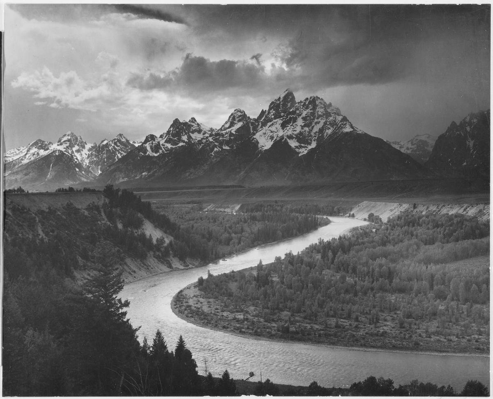
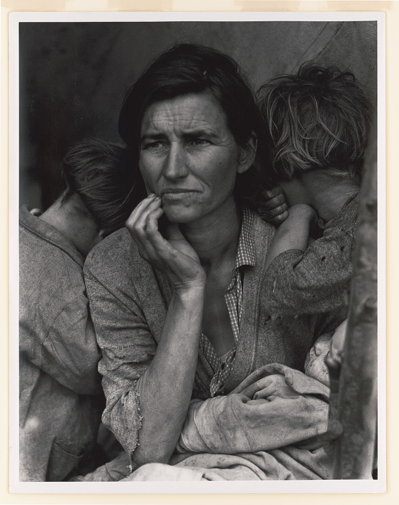
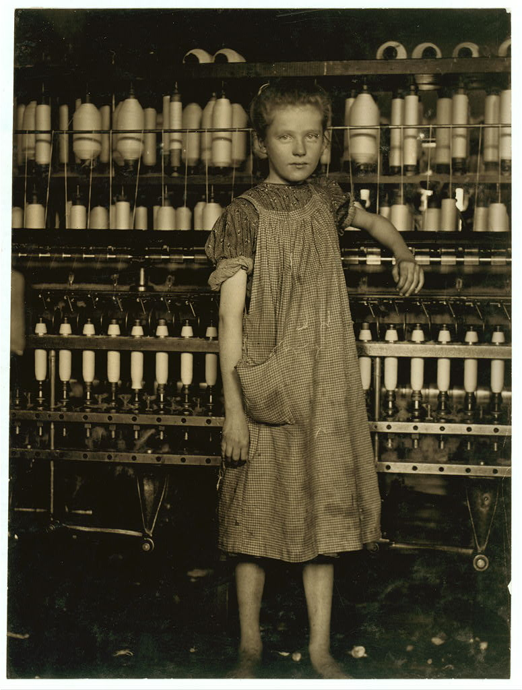

Photography Workshops
Explore classic photographs and practise seeing light, people and everyday stories through your own camera.
Browse WorkshopsExplore classic photographs and practise seeing light, people and everyday stories through your own camera.
Browse Workshops
Ansel Adams
The Tetons – Snake River, 1942
Source: National Archives
Study the river's curved line and the contrast between the mountains and sky. Then practise finding leading lines in a nearby landscape.
Session: 60-minute photo walk
View Photograph
Dorothea Lange
Migrant Mother, 1936
Source: Library of Congress
Discuss how expression, hands and framing shape a portrait. Practise making a portrait with a willing partner using natural light.
Session: 45-minute portrait practice
View Photograph
Lewis Hine
Addie Card, North Pownal Cotton Mill, 1910
Source: Library of Congress
Explore how a person's surroundings add context to a photograph. Create a short photo story about an everyday activity and write a factual caption.
Session: 60-minute storytelling exercise
View Photograph